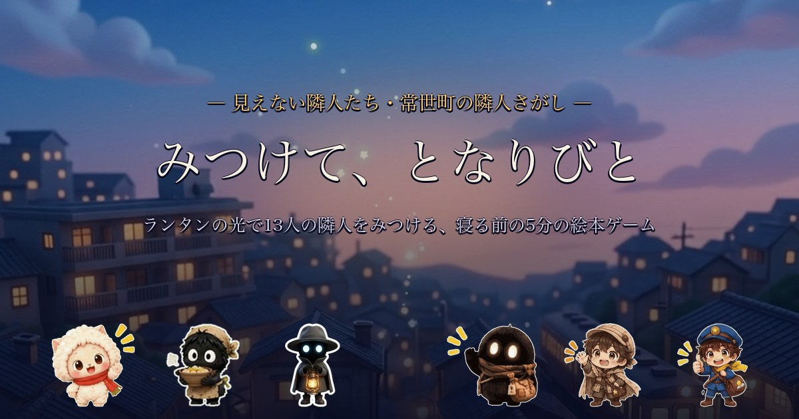
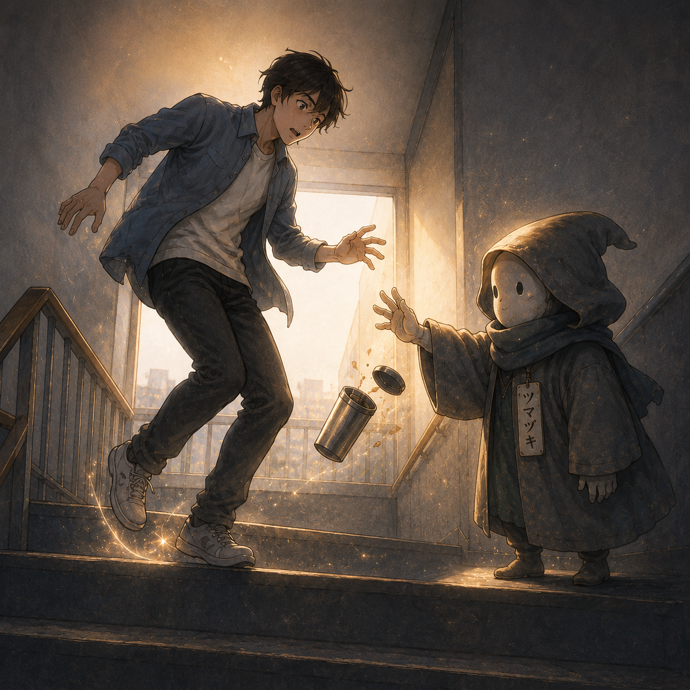

Lantern & Story
常世町の隣人さがし
ブラウザですぐに遊べる、音と灯りの探索絵本。
Picture Book / Animation / Audio
換気口の奥、電車の終点、忘れ物の影、古い時計の中。
日常の隙間に息づく、13人のちいさな隣人たちの物語。
だれにも褒められなかった日の帰り道、理由もなく心が軽くなったなら――
それはきっと、彼らがそっと仕事をした証拠です。
Web Picturebook Game
常世町の夜の隙間に隠れた13人の隣人たちを、ランタンの光で照らしてみつける無料スマホ絵本ゲーム。
みつけた隣人の絵本や朗読動画・音楽・LINEスタンプをその場で開いて楽しめます。寝る前の5分にどうぞ。
Memory Match Game
13人の隣人たちのカードをめくって揃える、無料のメモリーマッチ（神経衰弱）。
揃えた隣人の言葉が読めて、その隣人の歌も流れます。難易度は3段階、全員揃えると「出会った隣人たち」のシートが完成します。
LINE Animated Stickers
13人の小さな隣人たちが、あなたの日常のトーク画面にそっと寄り添うアニメーションスタンプになりました。
「おつかれさま」「あせらないで」「あったかくしてね」――毎日の何気ない会話をそっと温める優しい言葉が詰まっています。
Streaming & Meditation BGM
13人の隣人たちの心の機微を描いたオリジナル楽曲が、Apple Music、Spotifyをはじめ世界各音楽配信サービスにて好評配信中です。
ベッドサイドで聴くドリーミー版、デスクワークや集中用のインストゥルメンタル版、物語の世界観を歌うオリジナル版の3つのアレンジをお届けします。
Sleep & Relax
柔らかなオルゴールとアンビエントな広がり。今日という一日を静かに終え、穏やかな眠りにつくためのベッドサイドBGM（全13曲）。
Focus & Work
アコースティックギターとピアノの静謐なアンサンブル。読書、創作、デスクワークの集中を妨げない穏やかな旋律（全13曲）。
Story & Melody
物語の原点を描くボーカル＆メロディックトラック。13人のちいさな隣人たちの気配を歌に乗せて届けます。
Long Meditation Video (58min)
全14曲（Dreamy Ver.）を完全収録した約58分の長尺睡眠導入・作業用動画。常世町の静かな夜景スライドとともに、心地よい眠りの世界へ誘います。
▶ YouTubeで58分フル動画を聴く ↗08 / カゾエル
夜の公園の誰もいないブランコで、誰にも見られていない孤独な努力や我慢をひとつずつ数え、「その頑張りは消えていない」と静かに全肯定する数え役。
Character Guide
小さな隣人たちは、それぞれ違う場所で違う役目を持っています。

換気口の料理人
匂いを集めて煮詰め、記憶の味を作る小さな料理人。住みかは古びたアパートの換気口の奥。

終電後の案内人
帰れなかった想いを拾い、誰かの夢へ送り届ける影の旅人。住みかは終電後の駅。

古い時間の修復係
止まりかけた時間や置き忘れた瞬間を、静かにつなぎ直す隣人。

忘れ物の気配
置き忘れられた気持ちや小さな記憶を、丸く抱えて眠る不思議な存在。

冷えた部屋の灯り
誰かが忘れていった温かさを集め、必要な場所へそっと戻す隣人。

返事の代筆屋
言えなかった返事や届かなかった声を、少しだけ形にしてくれる隣人。

小さなつまずきの番人
立ち止まった人の足元に現れ、前へ進むきっかけを残していく隣人。

数え忘れの係
数えきれない小さな幸運や、見落とした日々の印を数えている隣人。

一瞬を止める子
大事な場面が流れ去らないよう、ほんの少しだけ時間を押さえてくれる隣人。

星屑の運び手
夜のすき間に落ちた小さな光を集め、眠る街へ運んでいく隣人。

夢の保管庫の管理人
人が諦めてしまった夢をガラス瓶に集めて保管する、夢の保管庫の管理人。

涙瓶職人
流れた涙を一滴だけ結晶として集め、美しい宝石へと育てる涙蔵の隣人。

朝焼け配達人
夜明け前に大きな朝焼け鞄を背負って飛び、人々のもとへ明日を届ける配達人。
Stories
読む、観る、聴く。それぞれの入口から、同じ小さな世界へ。
Story Catalog
各ストーリーはKindle絵本、YouTube読み聞かせ動画、配信楽曲、動くLINEスタンプと連動して展開しています。 各カードから購入、視聴、配信ページへ移動できます。
換気口の奥で集めた匂いを煮詰めるススノミ。その料理は誰にも食べられないのに、朝の部屋に懐かしさを残します。

終電後のホームに現れるカゲミチは、帰れなかった想いを拾い、誰かの夢の中へ送り届けます。

古い時計の中で暮らすトキツギは、止まりかけた一日をそっと縫い直そうとします。

誰にも気づかれない忘れ物の気配は、夜になるとワスレダマの腕の中で静かに息をします。
真冬の夜、自動販売機の裏でヌクモリは街の温度をほんの少しだけ調整し、凍えない夜を作ります。

届かなかった言葉を代わりに整えて、ヘンジロウは誰かの心の中へそっと返事を届けます。

人が転ばないように、ツマズキはほんの少しだけ時間を遅らせ、足元に小さな奇跡を残します。

誰にも見えない頑張りや小さな一日を、カゾエルは夜の公園で静かに数えています。

もう少しだけ残したい時間を、トメルンは小さなランタンに入れて、静かに守ります。
夜の屋根の上を歩くホシハコビは、人の願いが空へ届くように星の位置を少しだけ動かします。

人が諦めてしまった夢をガラス瓶に集めて保管するユメアツメ。夢には賞味期限がないと信じ、再び歩き始めるその日まで大切に守り続けます。

人が流した涙を一滴だけ、青い結晶として集めるナミダビン。地下の「涙蔵」で保管された涙は、流した本人が困難を乗り越えて立ち上がった時、美しい宝石へと姿を変えます。

夜と朝のあいだを飛びながら、世界中へ朝を届けているアシタヨビ。さみしい夜を過ごした人や泣きながら眠った人の窓辺にそっと朝焼けを置き、新しい「明日」と「希望」を届けます。
Music
全13話の物語に寄り添う、小さな隣人たちのオリジナルサウンドトラック。
Original Soundtrack
世界各音楽配信サービス（Apple Music、Spotify等）にて配信中。
ベッドサイド用Dreamy Ver.、作業・集中用Instrumental Ver.、物語原点のOriginal Ver.をお楽しみいただけます。
Long Meditation Video (58min)
全14曲（Dreamy Ver.）を完全収録した約58分の長尺睡眠導入・作業用動画。常世町の静かな夜景スライドとともに、心地よい眠りの世界へ誘います。
▶ YouTubeで58分フル動画を聴く ↗Sleep & Relax
オルゴールとアンビエントな広がり。穏やかな眠りにつくためのベッドサイドBGM（全13曲）。
Focus & Work
アコースティックギターとピアノの静謐なアンサンブル。作業・読書用の集中BGM（全13曲）。
Story & Melody
物語の原点を描くボーカル＆メロディックトラック。13人の隣人たちの歌声（全13曲）。
13 Tracks
各隣人のテーマ曲をバージョン別（Dreamy / Inst / Original）でお聴きいただけます。
Episode 01
換気口の奥で集めた匂いを煮詰めるススノミ。その料理は誰にも食べられないのに、朝の部屋に懐かしさを残します。
Episode 02
終電後のホームに現れるカゲミチは、帰れなかった想いを拾い、誰かの夢の中へ送り届けます。
Episode 03
古い時計の中で暮らすトキツギは、止まりかけた一日をそっと縫い直そうとします。
Episode 04
誰にも気づかれない忘れ物の気配は、夜になるとワスレダマの腕の中で静かに息をします。
Episode 05
真冬の夜、自動販売機の裏でヌクモリは街の温度をほんの少しだけ調整し、凍えない夜を作ります。
Episode 06
届かなかった言葉を代わりに整えて、ヘンジロウは誰かの心の中へそっと返事を届けます。
Episode 07
人が転ばないように、ツマズキはほんの少しだけ時間を遅らせ、足元に小さな奇跡を残します。
Episode 08
誰にも見えない頑張りや小さな一日を、カゾエルは夜の公園で静かに数えています。
Episode 09
もう少しだけ残したい時間を、トメルンは小さなランタンに入れて、静かに守ります。
Episode 10
夜の屋根の上を歩くホシハコビは、人の願いが空へ届くように星の位置を少しだけ動かします。
Episode 11
人が諦めてしまった夢をガラス瓶に集めて保管するユメアツメ。夢には賞味期限がないと信じ、再び歩き始めるその日まで大切に守り続けます。
Episode 12
人が流した涙を一滴だけ、青い結晶として集めるナミダビン。地下の「涙蔵」で保管された涙は、流した本人が困難を乗り越えて立ち上がった時、美しい宝石へと姿を変えます。
Episode 13
夜と朝のあいだを飛びながら、世界中へ朝を届けているアシタヨビ。さみしい夜を過ごした人や泣きながら眠った人の窓辺にそっと朝焼けを置き、新しい「明日」と「希望」を届けます。
換気口の料理人
換気口の奥で集めた匂いを煮詰め、記憶の味を作る小さな料理人。体は煤（すす）のように真っ黒ですが、目は白く光り、料理には誰かの心をホッとさせる不思議な力があります。
ススノミの作る料理は、物理的な食べ物ではありません。「あの日の夕飯の匂い」や「お母さんが作ってくれたシチューの記憶」を煮詰めて、部屋中に優しく漂わせるのが彼らの仕事です。
「……コトコト、コトコト。今日の匂いも、いい匂い。」
終電後の案内人
人の影から生まれた存在。言えなかった言葉や渡せなかった手紙など、行き場のない感情を拾い上げ、そっと誰かの夢へと届けます。
カゲミチが持ち歩く古い箱の中には、形を持たない「想いのかけら」が光を放ちながらしまわれています。誰かが心に秘めたまま眠りについた夜、彼はその箱を開けて夢の中へ案内するのです。
「さあ、帰れなかった想いを、夢のなかへ。」
古い時間の修復係
壊れた時間や、すれ違った想いをそっと拾い集め、繋ぎ直している時間の職人。人の暮らしの裏側で、誰にも気づかれずに小さな奇跡を起こします。
すれ違ってしまったタイミングや、もう会えない人との夢。トキツギが使う「時間の糸」は、切れてしまった縁をほんの少しだけ縫い合わせることができます。
「大丈夫、ちゃんと届いてるよ。」
街灯の下の忘れ物係
言いかけてやめた夢や、途中で諦めた約束など、「物ではない忘れ物」を拾い集め、まだ必要な人のそばへそっと届ける静かな存在。
ワスレダマの袋の中には、青や金色の光を放つ「忘れ物」がしまわれています。それらは元の持ち主の元へ返されると、ふとした瞬間に新しい希望へと変わります。
「きっと、だいじょうぶ。」
冷えた部屋の灯り
真冬の夜、街の温度をほんの少しだけ調整して、人々が凍えない夜をこっそり作っている温度番。ふわふわの毛並みで包み込みます。
ヌクモリは、人の心の「冷え」を感じ取ることができます。誰かが孤独を感じている夜、自動販売機の裏からこっそりと「ほんのりしたあたたかさ」を送り届けます。
「今日はなんだか凍えないな……それ、たぶんぼくのしごと。」
返事の代筆屋
投函されたまま届かなかった手紙や、言えなかった言葉を代わりに整え、誰かの心の中へ届けてくれるポストの中の手紙屋さん。
深夜0時を過ぎると、ポストの中は小さな郵便局に変わります。ヘンジロウは小さな眼鏡をかけ、一生懸命に羽ペンを走らせて、不器用な想いを美しい言葉へと紡ぎ直します。
「ちゃんと、届くようにね。」
小さなつまずきの番人
人が転ばないように、ほんの少しだけ時間を遅らせる存在。足元に現れ、前へ進むきっかけや小さな気づきを残していきます。
落とした物をキャッチさせたり、ギリギリのタイミングで電車に間に合わせたり。それは決して偶然ではなく、ツマズキがフードの中で時間をコントロールしているからです。
「大丈夫、ほんの少しだけね。」
数え忘れの係
誰もいないブランコを見守りながら、今日一日をそっと数える不思議な存在。笑った回数、悲しんだ回数、頑張った回数を見逃しません。
誰にも褒められなかった日でも、カゾエルのノートにはしっかりと「がんばったかいすう」が刻まれています。だから、あなたの頑張りは絶対に消えません。
「きみの頑張り、ちゃんと見てるよ。」
一瞬を止める子
大事な場面が流れ去らないよう、ほんの少しだけ時間を押さえてくれる存在。「もう少し一緒にいたい」という願いを未来へと繋ぎます。
冷蔵庫の奥で彼らが保存しているのは、食べ物ではなく「時間」です。終わってほしくない食卓の風景や、家族の最後の時間を、大切にビンに詰めて守っています。
「大切な時間は、ちゃんと、守られてるよ。」
星屑の運び手
人々の願いが空へ届くように、星の位置をほんの少し動かしている存在。屋根の上を歩き、夜の奇跡をこっそりと作っています。
彼らが星明かりの杖を振り、星の箱から新しい星を空へ放り投げたとき、それは地上からは美しい流れ星に見えます。すべては誰かの願いを叶えるための、見えない努力なのです。
「もうすぐ、届くよ。」
夢の保管庫の管理人
人が諦めてしまった夢を拾い集め、ガラス瓶にしまって大切に保管している隣人。「夢に賞味期限はない」と誰よりも信じており、持ち主が思い出して再び歩き始めるその日まで、静かに守り続けます。
常世町の西の丘に建つ温室のような「夢の保管庫」。そこには無数のガラス瓶が並び、中では持ち主が迎えに来る日を待つ夢の光がきらきらと眠っています。
「夢には、賞味期限なんてない。」
涙瓶職人
人が流した涙を集め、地下の「涙蔵（なみだぐら）」で大切に管理している隣人。涙を「心ががんばった証」と信じ、悲しい涙や嬉しい涙、どんな涙も決して捨てずに、世界に一つだけの宝石へと変わる日を待ちます。
ナミダビンが管理する「涙蔵」の棚には、何万本もの瓶が並び、涙がきらきらと眠っています。前を向いて歩き出した瞬間、それらは美しい宝石へと姿を変えます。
「涙は、弱さじゃない。未来へ続く、小さな宝物。」
朝焼け配達人
夜と朝のあいだに大きな朝焼け鞄を背負って空を飛び、人々のもとへ「明日」を届けている配達人。鞄に入ったオレンジや桃色の朝焼けを窓辺に置き、新しい一日を始めさせる希望を運びます。
アシタヨビが背負う大きな鞄には、オレンジや桃色、金色の朝焼けが詰まっています。頑張った人や泣いた人、それぞれに合わせた特別な色が窓辺に届けられます。
「朝は、空が運んでくるだけじゃない。」